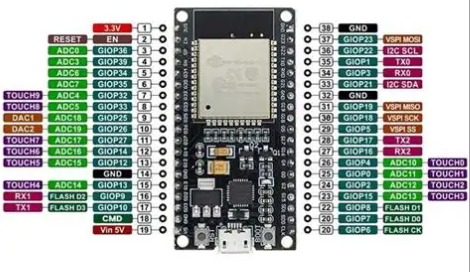
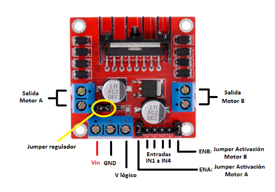

PRﾃ，TICAS PRIMER SEMESTRE
Microcontroladores
SP32

- El ESP32 es un microcontrolador, al igual que el Arduino, pero tiene conectividad Bluetooth y WiFi ya integrada en la placa. Esto facilita mucho los proyectos de IoT, ya que intercambiarán información constantemente con la red.
Antes de iniciar
Toda la programación se realiza con el programa arduino, asi mismo asegurate de tener descargada la biblioteca ESP 32 by Arduino.
Práctica 1
- Materiales:
- ESP 32
- 1 resistencia de 1K
- Jumpers
- Led
- Botón
- Resistencia de 10k
Parte 1:

const int led = 33;
const int led = 25;
void setup(){
serial.begin(115200); //INICIO DE LA COMUNICACION
pinMode(led, OUTPUT);
pinMode(btn, INPUT);
}
void loop(){
int estado= digitalRead(btn);
if (estado==1){
digitalWrite(led,1);
}
else{
digitalWrite(led,0)
}
}
Parte 2: Conectar ESP32 por Bluetooth
Para poder controlar la ESP32 se utiliza la aplicación "Serial Bluetooth Terminal"
Antes de iniciar
Los teléfonos iPhone no se pueden conectar a la aplicación por lo que se puede probar con dispositivos Android o una computadora con Bluetooth
const int led = 33;
const int led = 25;
void setup(){
serial.begin(115200); //INICIO DE LA COMUNICACION
serialBT.begin ("Arduinito") // Nombre del dispositivo Bluetooth
}
void loop(){
if (SerialBT.available()){
String mensaje= SerialBT.readString();
Serial.printlin("Recibido: "+mensaje);
if (mensaje==1){
digitalWrite(led,1);
}
else{
digitalWrite(led,0)
}
}
delay (1000);
}
Práctica 2
- Materiales:
- ESP 32
- Jumpers
- Motor
- Puente H

Puente H

- El puente H es un circuito electrónico que se utiliza para controlar el movimiento de motores, en particular motores de corriente continua (DC). Su nombre se debe a la forma típica del circuito, que se asemeja a la letra «H». El principal objetivo del puente H es permitir que un motor gire en ambas direcciones: hacia adelante y hacia atrás. Para lograr esto, se utilizan conmutadores o interruptores, que pueden ser mecánicos (como relés) o electrónicos (como transistores).
- El puente H se conecta siguiendo el siguiente diagrama:

Parte 1:
El siguiente video se puede observar el funcionamiento objetivo de esta práctica:

#define in1 2
#define in2 15
void setup(){
pinMode(in1, OUTPUT);
pinMode(in2, OUTPUT);
}
void loop(){
digitalWrite (in1,1);
digitalWrite (in2,0);
delay(4000);
digitalWrite (in1,0);
digitalWrite (in2,0);
delay(2000);
digitalWrite (in1,0);
digitalWrite (in2,1);
delay(4000);
}
PWM
La Modulación por Ancho de Pulso (PWM) es una técnica que permite simular una señal analógica utilizando una señal digital que alterna rápidamente entre los estados HIGH y LOW. Esto es útil para controlar dispositivos como LEDs, motores y altavoces, ajustando su brillo, velocidad o tono, respectivamente.
Funcionamiento de PWM en Arduino
Arduino utiliza temporizadores internos para generar señales PWM en pines específicos marcados con el símbolo ~. La función principal para trabajar con PWM es analogWrite(pin, valor), donde el parámetro valor varía entre 0 y 255:
0: La señal estará siempre en LOW.
255: La señal estará siempre en HIGH.
127: La señal estará en HIGH el 50% del tiempo (ciclo de trabajo del 50%).
Parte 2: Controlar la velocidad de un motor
En esta parte de la práctica se programa el ESP32 para controlar la velocidad de un motor, que esta misma aumente progresivamente
/*Control de 1 solo motor*/
#define in1 14
#define in2 27
#define pwm 25 //Definicion de pin de Velocidad
void setup() {
/*Declarar Pines Como salida*/
pinMode(in1, OUTPUT);
pinMode(in2, OUTPUT);
/*Configuracion de pin PWM
- Se conecta al pin 12(pwm)
- Frecuencia de 1Khz
- Resolucion de 8 bit (0-255)
- Canal 0
*/
ledcAttachChannel(pwm, 1000, 8, 0);
}
void loop() {
/*ADELANTE*/
digitalWrite(in1, 0);
digitalWrite(in2, 1);
ledcWrite(pwm, 0);//Velocidad al 0%
delay(500);
ledcWrite(pwm, 51);//Velocidad al 20%
delay(500);
ledcWrite(pwm, 102);//Velocidad al 40%
delay(500);
ledcWrite(pwm, 153);//Velocidad al 60%
delay(500);
ledcWrite(pwm, 204);//Velocidad al 80%
delay(500);
ledcWrite(pwm, 255);//Velocidad al 100%
delay(500);
}
}
Práctica 3 : Actuadores
- Materiales:
- ESP 32
- Jumpers
- Motor
-
1 Microservo 9g
Parte 1:

En esta parte de la práctica se programa un ESP32 para controlar un servomotor, para ir cambiando gradualmente el ángulo 0-90, 0-180 en un ciclo infinito.
#define pwm 27
int duty = 0;
int grados=0;
void setup(){
/*Declarar Pines de Como salida*/
pinMode (27, OUTPUT);
/*Configuracion de pin pwm
-Se conecta al pin 27 (pwm)
-Frecuencia de 50hz
-Resolución de 12 bit (0-4096)
-Canal
*/
led AttachChannel (pwm, 50, 12, 0);
Serial.begin (115200);
}
void loop(){
/*
grados=0;
duty = map (grados, 0, 180, 205, 410);
Serial.print("Pos: ");
Serial.printIn (duty);
ledCWrite(pwm,duty);
delay(1000);
grados=90;
duty = map (grados, 0, 180, 205, 410);
Serial.print("Pos: ");
Serial.printIn (duty);
ledCWrite(pwm,duty);
delay(1000);
grados=180;
duty = map (grados, 0, 180, 205, 410);
Serial.print("Pos: ");
Serial.printIn (duty);
ledCWrite(pwm,duty);
delay(1000);
}
Parte 2:
Video de servomotor girando progresivamente partiendo desde cero
En esta parte el servomotor se programa para ir aumentando progresivamente 10° iniciando desde los 0°.
#define pwm 27
int duty = 0;
int grados=0;
void setup(){
pinMode (pwm, OUTPUT);
//Configuracion de pin pwm
//Frecuencia de 50hz, Resolución de 12 bit (0-4096), Canal: 0
led AttachChannel (pwm, 50, 12, 0);
Serial.begin (115200);
}
void loop(){
for(int angulo =10; angulo <= 180; angulo +=10) {
//Ir a 9°
grados = 0;
duty =map (grados,0, 180, 205, 410);
Serial.print("Pos: ");
Serial.printIn(duty);
ledcWrite (pwm,duty);
delay (1000);
//Ir al ángulo actual
grados = angulo;
duty =map (grados,0, 180, 205, 410);
Serial.print("Pos: ");
Serial.printIn(duty);
ledcWrite (pwm,duty);
delay (1000);
}
}
}
Proyecto Primer parcial
- Materiales:
- ESP 32
- Jumpers
- 2 motores
- 1 Puente H
- 2 llantas de 7cm de diametro
- 1 rueda loca
- Tornillos
-
Baterias de 12V
Diseño:
Para este carro se inspiro en una camioneta Jeep, la camioneta presentada tiene detalles en vinil como lo son las flamas, letras con el nombre de la universidad, acrilico para las ventanas para simular los cristales, la carrocería del carro fue cortada en MDF con corte laser
#include "BluetoothSerial.h"
BluetoothSerial SerialBT;
// Pines del puente H
const int IN1 = 4; // Motor izquierdo
const int IN2 = 16;
const int ENA = 2; //PWM
const int IN3 = 17; // Motor derecho
const int IN4 = 18;
const int ENB = 19;
int valSpeed = 255; //PWM
Serial.begin(115200);
SerialBT.begin("Otrocarrito"); // Nombre del dispositivo Bluetooth
pinMode(IN1, OUTPUT); //Motor derecho
pinMode(IN2, OUTPUT);
pinMode(ENA, OUTPUT);
pinMode(IN3, OUTPUT);//Motor izquierdo
pinMode(IN4, OUTPUT);
pinMode(ENB, OUTPUT);
stopMotors();
}
void loop() {
if (SerialBT.available()) {
char command = SerialBT.read();
Serial.println(command);
switch (command) {
case 'F': forward(); break; //Adelante
case 'B': backward(); break; //Atras
case 'L': turnLeft(); break; //Izquierda
case 'R': turnRight(); break;//Derecha
case 'S': stopMotors(); break;//Detenerse
case '0': setSpeed(0); break;
case '1': setSpeed(25); break;
case '2': setSpeed(50); break;
case '3': setSpeed(75); break;
case '4': setSpeed(100); break;
case '5': setSpeed(125); break;
case '6': setSpeed(150); break;
case '7': setSpeed(175); break;
case '8': setSpeed(200); break;
case '9': setSpeed(255); break;
}
}
}
void forward() {
analogWrite(ENA, valSpeed);
analogWrite(ENB, valSpeed);
digitalWrite(IN1, HIGH);
digitalWrite(IN2, LOW);
digitalWrite(IN3, HIGH);
digitalWrite(IN4, LOW);
}
void backward() {
analogWrite(ENA, valSpeed);
analogWrite(ENB, valSpeed);
digitalWrite(IN1, LOW);
digitalWrite(IN2, HIGH);
digitalWrite(IN3, LOW);
digitalWrite(IN4, HIGH);
}
void turnLeft() {
analogWrite(ENA, valSpeed / 2);
analogWrite(ENB, valSpeed);
digitalWrite(IN1, HIGH);
digitalWrite(IN2, LOW);
digitalWrite(IN3, HIGH);
digitalWrite(IN4, LOW);
}
void turnRight() {
analogWrite(ENA, valSpeed);
analogWrite(ENB, valSpeed / 2);
digitalWrite(IN1, HIGH);
digitalWrite(IN2, LOW);
digitalWrite(IN3, HIGH);
digitalWrite(IN4, LOW);
}
void stopMotors() {
analogWrite(ENA, 0);
analogWrite(ENB, 0);
digitalWrite(IN1, LOW);
digitalWrite(IN2, LOW);
digitalWrite(IN3, LOW);
digitalWrite(IN4, LOW);
}
void setSpeed(int val) {
valSpeed = val;
}
Funcionamiento
Se utilizo una aplicación externa para controlar el movimiento del carrito. En el siguiente video es posible observar el funcionamiento piloto del proyecto:
Pese a haber sido eficiente en sus pruebas piloto, el día de la competencia sufrio contratiempos inesperados como se puede observar en el siguiente video:
Se llega a la siguiente conclusión: Hay mejoras estructurales que podrían cambiarse en un siguiente proyecto, detalles a tomar en cuenta y hacer más pruebas con el proyecto previo a la entrega.
1) Proyecto final
- Nombre del proyecto: Balancin con Reconocimiento de Camara
- Equipo / Autor(es): Emily Mendez, Aldo Fernandez, Alexandra Groot, Valeria Piña
- Curso / Asignatura: Introducción a la Mecatrónica
- Fecha: 24/11/2025
- Descripción breve: Desarrollo de una plataforma con cámara que balancee una pelota, utilizando servomotores y el reconocimento de colores desde Python.
2) Objetivos
General:
Diseñar y construir un sistema que mantenga una pelota centrada sobre una plataforma utilizando visión por computadora y control PID.
Específicos: - Procesar la imagen de la cámara en Python para detectar la pelota.
-
Enviar los datos obtenidos al Arduino mediante Bluetooth.
-
Implementar control PID que ajuste los servomotores para estabilizar la plataforma.
3) Alcance y Exclusiones
- Incluye: El proyecto contempla un mes de trabajo partiendo del código base proporcionado por el profesor, realizando modificaciones necesarias para adaptar el reconocimiento por cámara, la comunicación con Arduino y el control del mecanismo. Incluye también el diseño y fabricación del balancín y los soportes de servomotores.
4) Planeación
La planeación del proyecto se estructuró en tres etapas principales:
- Ajustes al código base: Modificación del código de Arduino para interpretar correctamente los comandos enviados desde Python.
- Diseño mecánico en SolidWorks: Creación de los soportes para servomotores y del punto de apoyo del centro, siendo estos impresas en 3D y cortadas en MDF.
- Integración y calibración: Ensamble completo y ajustes de los parámetros del PID para lograr un movimiento estable del balancín.
5) Desarrollo
Diseño
El diseño del balancín se basó en un mecanismo previamente visto en un video, adaptándolo a las necesidades del proyecto. Se incorporaron dos soportes laterales para servomotores y un soporte central con esfera para permitir el movimiento en los ejes X y Y. Las piezas que sostienen a los servomotores y la esfera de la mitad fueron impresas en 3D, y los demas materiales fueron cortados en MDF.
Programación
El desarrollo del código incluye:
- Detección de la pelota mediante filtros HSV en Python.
- Cálculo del error respecto al centro de la imagen.
- Envío de instrucciones por Bluetooth hacia el Arduino.
- Implementación de un controlador PID en Arduino para mover los servos de acuerdo con el error.
- El sistema funciona de manera continua, permitiendo un ajuste constante de la plataforma para mantener la pelota dentro de la zona deseada.
Código Arduino
#include <BluetoothSerial.h>
#include <ESP32Servo.h>
BluetoothSerial SerialBT;
Servo servoX;
Servo servoY;
// Configuración de servos
// Lﾃ庚ITES CORREGIDOS: X toma los límites que tenía Y y viceversa
const int MIN_ANG_X = 120; // Servo X mínimo
const int MAX_ANG_X = 30; // Servo X máximo
const int CENTER_X = 100; // Centro aproximado
const int MIN_ANG_Y = 100; // Servo Y mínimo
const int MAX_ANG_Y = 10; // Servo Y máximo
const int CENTER_Y = 85; // Centro aproximado
// PID más rápido
float Kp = 1.0;
float Ki = 0.01;
float Kd = 0.2;
// Variables X
int eX = 0;
float integralX = 0;
float prevErrorX = 0;
float posX = CENTER_X;
// Variables Y
int eY = 0;
float integralY = 0;
float prevErrorY = 0;
float posY = CENTER_Y;
// Suavizado
float maxStep = 3.0; // ligeramente mayor para movimientos más rápidos
unsigned long lastTime = 0;
void setup() {
Serial.begin(115200);
SerialBT.begin("ESPbalancin");
servoX.attach(27);
servoY.attach(14);
servoX.write(posX);
servoY.write(posY);
lastTime = millis();
Serial.println("PID rápido con límites X/Y intercambiados listo");
}
void loop() {
unsigned long now = millis();
float dt = (now - lastTime) / 1000.0;
if (dt <= 0) dt = 0.001;
// Leer errores de Bluetooth
while (SerialBT.available()) {
String cmd = SerialBT.readStringUntil('\n');
cmd.trim();
if (cmd.startsWith("EX:")) eX = cmd.substring(3).toInt();
else if (cmd.startsWith("EY:")) eY = cmd.substring(3).toInt();
}
// ===== PID X =====
float errorX_PID = -eX; // invertir X
integralX += errorX_PID * dt;
float derivativeX = (errorX_PID - prevErrorX) / dt;
float outputX = Kp * errorX_PID + Ki * integralX + Kd * derivativeX;
float targetX = CENTER_X + outputX;
// Suavizado
float diffX = targetX - posX;
if (abs(diffX) > maxStep) posX += (diffX > 0 ? maxStep : -maxStep);
else posX = targetX;
posX = constrain(posX, MIN_ANG_X, MAX_ANG_X);
prevErrorX = errorX_PID;
// ===== PID Y =====
float errorY_PID = -eY;
integralY += errorY_PID * dt;
float derivativeY = (errorY_PID - prevErrorY) / dt;
float outputY = Kp * errorY_PID + Ki * integralY + Kd * derivativeY;
float targetY = CENTER_Y + outputY;
float diffY = targetY - posY;
if (abs(diffY) > maxStep) posY += (diffY > 0 ? maxStep : -maxStep);
else posY = targetY;
posY = constrain(posY, MIN_ANG_Y, MAX_ANG_Y);
prevErrorY = errorY_PID;
// Mover servos
servoX.write(posX);
servoY.write(posY);
lastTime = now;
Serial.printf("EX=%d EY=%d | posX=%.1f posY=%.1f\n", eX, eY, posX, posY);
delay(20);
}
Código Python
import cv2
import numpy as np
import bluetooth
import time
# Configuración Bluetooth
port = 1
sock = bluetooth.BluetoothSocket()
sock.settimeout(15)
print("Conectando a ESP32...")
while True:
try:
sock.connect(("6C:C8:40:4D:AE:E6", port)) # Cambia por tu MAC
print("✔ Conectado a ESP32.")
break
except Exception as e:
print("Reintentando conexión:", e)
time.sleep(1)
video = cv2.VideoCapture(1)
time.sleep(0.5)
while True:
ret, frame = video.read()
if not ret:
break
# Rotar 90 grados a la derecha
frame = cv2.rotate(frame, cv2.ROTATE_90_CLOCKWISE)
hsv = cv2.cvtColor(frame, cv2.COLOR_BGR2HSV)
low = np.array([100, 60, 40], dtype=np.uint8)
high = np.array([130, 255, 255], dtype=np.uint8)
mask = cv2.inRange(hsv, low, high)
contours, _ = cv2.findContours(mask, cv2.RETR_EXTERNAL, cv2.CHAIN_APPROX_SIMPLE)
centrox = frame.shape[1] // 2
centroy = frame.shape[0] // 2
# Dibuja centro de cámara (verde)
cv2.circle(frame, (centrox, centroy), 5, (0, 255, 0), 2)
if contours:
cont = max(contours, key=cv2.contourArea)
(x, y), radius = cv2.minEnclosingCircle(cont)
x, y = int(x), int(y)
# Dibuja centro de la pelota (rojo)
cv2.circle(frame, (x, y), 5, (0, 0, 255), -1)
cv2.circle(frame, (x, y), int(radius), (0, 255, 255), 2)
ErrorX_raw = x - centrox
ErrorY_raw = y - centroy
# Ajuste por rotación 90° y control diagonal invertido
ErrorX = -ErrorY_raw # invertir eje X
ErrorY = ErrorX_raw # invertir eje Y
# Envía errores
try:
sock.send(f"EX:{ErrorX}\n".encode())
sock.send(f"EY:{ErrorY}\n".encode())
except:
pass
cv2.putText(frame, f"EX:{ErrorX} EY:{ErrorY}", (20, 40),
cv2.FONT_HERSHEY_SIMPLEX, 0.7, (0, 255, 0), 2)
cv2.imshow("Camara", frame)
cv2.imshow("Mascara", mask)
if cv2.waitKey(1) & 0xFF == ord('q'):
break
video.release()
cv2.destroyAllWindows()
sock.close()
6) Resultados y Evidencias
Videos
7) Conclusiones
El proyecto permitió poner en practica los conceptos de mecatrónica, combinando diseño, control y visión por computadora. El sistema final demuestra cómo el uso de reconocimiento por cámara y control PID puede aplicarse a un mecanismo basico como balancear una pelota, a sistemas mas complejos que permiten que un proyecto funcione de manera apropiada.
También se destaca la importancia de una buena organización y tiempos de trabajo definidos para lograr un proyecto exitoso.
Ejemplo 1
[ \begin{array}{|c|c|c|c|c|} \hline \text{Eslabón} & a_i & \alpha_i & d_i & \theta_i \ \hline 1 & a_1 & 0 & 0 & \theta_1 \ 2 & a_2 & 0 & 0 & \theta_2 \ \hline \end{array} ]
$$ {}^{0}{1}T = \begin{bmatrix} \cos\theta \ \sin\theta_{1} & \cos\theta_{i} & 0 & a_{1}\sin\theta_{1} \ 0 & 0 & 1 & 0 \ 0 & 0 & 0 & 1 \end{bmatrix} $$} & -\sin\theta_{i} & 0 & a_{1}\cos\theta_{1
$$ {}^{1}{2}T = \begin{bmatrix} \cos\theta \ \sin\theta_{2} & \cos\theta_{2} & 0 & a_{2}\sin\theta_{2} \ 0 & 0 & 1 & 0 \ 0 & 0 & 0 & 1 \end{bmatrix} $$} & -\sin\theta_{2} & 0 & a_{2}\cos\theta_{2
$$ {}^{0}{2}T = \begin{bmatrix} \cos\theta \ \sin\theta_{12} & \cos\theta_{12} & 0 & a_{1}\sin\theta_{1} + a_{2}\sin\theta_{12} \ 0 & 0 & 1 & 0 \ 0 & 0 & 0 & 1 \end{bmatrix} $$} & -\sin\theta_{12} & 0 & a_{1}\cos\theta_{1} + a_{2}\cos\theta_{12